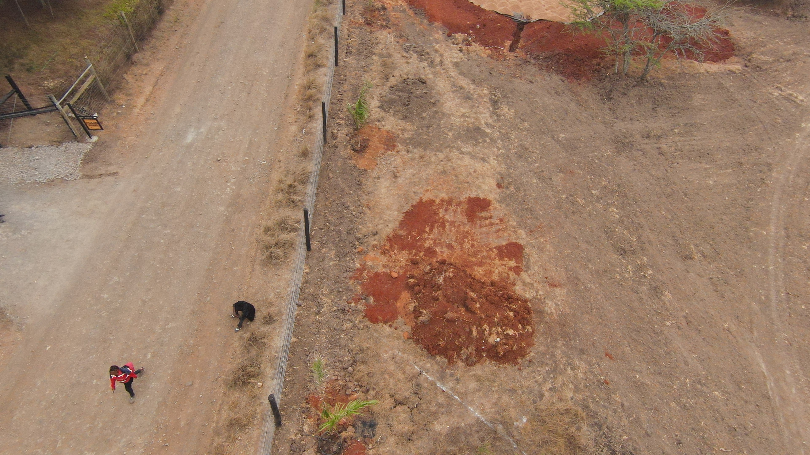
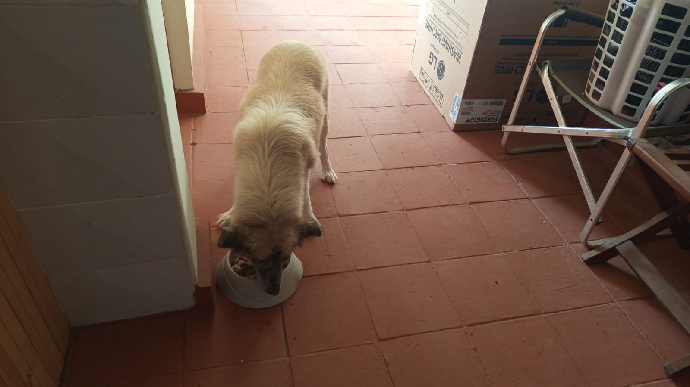

Mucheru World of Golf
Civil, agronomic, and earthmoving operations at Mucheru World of Golf on Wednesday, 30th September 2026 were supervised by Mr. Gichuhi and Ken, recording significant advancements in green shaping, reservoir liner anchoring, perimeter drainage, and estate boundary surveying:
- Surplus Red Soil Application on Greens 1, 2, 10, 11, 12 & 18: Construction crews hauled, dumped, spread, and graded surplus red loam topsoil across the surrounds, collars, and aprons of Greens 1, 2, 10, 11, 12, and 18. This builds up perimeter contours, feathers green complexes smoothly into natural fairway grades, and establishes vital agronomic growing medium around compacted pumice and riversand putting beds.
- Dam 1 Polyethylene Liner Anchoring & 360-Degree Embankment Leveling: Specialized reservoir works continued at Dam 1. The edge of the heavy-duty geomembrane polyethylene liner was tucked securely into the continuous perimeter trench and backfilled with soil. Civil crews leveled the entire circumference of the reservoir embankment using taut string-lines, guaranteeing identical crest elevations all round for balanced, equalized water overflow during high-volume replenishment.
- Main Perimeter Drainage Pipeline Backfilled to Teebox 5: Earthwork crews completed backfilling and covering up the excavated drainage trench enclosing the main perimeter drainage pipe run. The trench was filled, leveled, and compacted along the boundary line all the way to Teebox 5, securing subsurface runoff pathways.
- Perimeter Living Hedge Seedlings Planting 100% Complete: The systematic planting of living hedge seedlings along the entire fenced boundary line is now 100% complete, extending continuously up to Gate B to establish a lush green security and privacy vegetative barrier.
- Drainage Network Plumber Inspection & Maintenance: A certified plumber was on site to inspect the interconnected subsurface drainage infrastructure, assess silt traps and discharge outfalls, and conduct routine preventive maintenance.
- Main Entrance Gate Access Murram Fill: Additional heavy loads of quality murram soil were delivered, dumped, spread, and compacted at the main entrance gate threshold, strengthening the heavy vehicular access corridor against rutting and seasonal wear.
- Boundary Fencing Surveying with Contractor: The boundary fencing contractor arrived on site and conducted formal boundary surveying alongside Mr. Gichuhi, establishing precise alignment beacons across the lands at Nairobi place and the parcel where Mwangi resides.
Mucheru World of Golf Milestone Summary
Substantial multi-green apron shaping with surplus red loam completed across 6 greens; Dam 1 achieved uniform string-line overflow crest leveling and liner trench anchoring; perimeter drainage covered to Teebox 5; and boundary hedge planting reached 100% completion to Gate B.
Comprehensive aerial drone and ground-level video documentation capturing today's operational progress at Mucheru World of Golf: Dam 1 polyethylene liner anchoring and string-level embankment leveling for equal overflow, surplus red soil spreading across Greens 1, 2, 10, 11, 12, and 18 aprons, backfilled perimeter drainage pipeline up to Teebox 5, completed perimeter hedge seedlings along Gate B boundary, and murram entrance grading.
18-hole putting green status audit showing the latest work completed and current condition for each green as of September 30, 2026:
| Green | Current Technical & Agronomic State | Milestone Status |
|---|---|---|
| Green 1 Today | Surplus red soil spread around outer surrounds and leveled (Sep 30). | Surplus Red Soil Applied |
| Green 2 Today | Surplus red soil spread around green collar and surrounds (Sep 30). | Surplus Red Soil Applied |
| Green 3 | Received 1 lorry red soil; drainage outlet alignment marked (Sep 26). | Riversand Applied |
| Green 4 | Received 1 lorry red soil; drainage outlet alignment marked (Sep 26). | Surrounds Leveled |
| Green 5 | Water pipeline connected from Peter's supply; overhead sprinklers running on mature grass (Sep 29). | Water Connected • Sprinklers On |
| Green 6 | Surplus red soil applied to raise and level surrounds (Sep 28). | Apron Raised • Palms Placed |
| Green 7 | Volcanic pumice spread and leveled across the green bed (Sep 28). | Pumice Applied & Leveled |
| Green 8 | Received 1 lorry red soil; drainage outlet alignment marked (Sep 26). | Riversand Unleveled |
| Green 9 | Received 1 lorry red soil; drainage outlet alignment marked (Sep 26). | Riversand Applied |
| Green 10 Today | Surplus red soil spread around green collar and surrounds (Sep 30). | Surplus Red Soil Applied |
| Green 11 Today | Surplus red soil spread and leveled around surrounds (Sep 30). | Surplus Red Soil Applied |
| Green 12 Today | Surplus red soil spread and leveled around surrounds (Sep 30). | Surplus Red Soil Applied |
| Green 13 | Surplus red soil spread around surrounds to raise and match green level (Sep 29). | Surplus Red Soil Applied |
| Green 14 | Surplus red soil spread around surrounds to build up perimeter level (Sep 29). | Surplus Red Soil Applied |
| Green 15 | Surplus red soil spread around surrounds to raise perimeter level (Sep 28). | Apron Raised • Compacted |
| Green 16 | Surplus red soil spread around surrounds to blend with fairway (Sep 29). | Surplus Red Soil Applied |
| Green 17 | Surplus red soil spread around surrounds to raise and align levels (Sep 29). | Surplus Red Soil Applied |
| Green 18 Today | Surplus red soil spread and leveled around collar and surrounds (Sep 30). | Surplus Red Soil Applied |
Comprehensive 18-hole championship teebox platform audit tracking earthwork leveling, structural embankments, and playing corridor alignments. Preserved day-to-day continuity as of September 30, 2026:
| Teebox | Current Technical & Earthwork State | Platform Status |
|---|---|---|
| Tee 1 | Championship launch platform completely reshaped, cut, and graded to design elevation using Backhoe Loader (Sep 24); received 1 lorry red soil delivery (Sep 26). | Platform Reshaped |
| Tee 2 | Playing launch platform completely reshaped, contoured, and graded using Backhoe Loader (Sep 24); received 1 lorry red soil delivery (Sep 26). | Platform Reshaped |
| Tee 3 | Playing launch platform completely reshaped, contoured, and graded using Backhoe Loader (Sep 24); received 1 lorry red soil delivery (Sep 26). | Platform Reshaped |
| Tee 4 | Championship launch platform completely reshaped, cut, and graded using Backhoe Loader (Sep 23); received 1 lorry red soil delivery (Sep 26). | Platform Reshaped |
| Tee 5 Today | Main perimeter drainage pipeline backfilled and covered up to Teebox 5 (Sep 30). | Drainage Backfilled |
| Tee 6 | Precision leveling and compaction completed; fresh delivery of 1 lorry red loam topsoil unloaded at platform surrounds (Sep 26). | Red Soil In • Leveled |
| Tee 7 | Dual launch platforms completely reshaped and precision contour-leveled using XGMA backhoe loader (Sep 20); received 1 lorry red soil delivery (Sep 26). | Dual Platforms Reshaped |
| Tee 8 | Graded, leveled, and contour-adjusted; fresh delivery of 1 lorry red loam topsoil unloaded directly on platform (Sep 26). | Red Soil In • Graded |
| Tee 9 | Playing platform leveled and surrounding perimeter ground graded (Sep 1); received 1 lorry red soil delivery (Sep 26). | Platform Leveled |
| Tee 10 | Graded and compacted platform serving the start of the back-nine playing corridor; received 1 lorry red soil delivery (Sep 26). | Platform Compacted |
| Tee 11 | Rough shaping, elevation grading, and Backhoe subsoil leveling completed (Sep 7); received 1 lorry red soil delivery (Sep 26). | Shaped & Graded |
| Tee 12 | Dual platforms established: primary championship tee resized; new forward Ladies' Tee platform constructed (Sep 5); received 1 lorry red soil delivery (Sep 26). | Dual Platforms Complete |
| Tee 13 | Playing platform completely reshaped, contour-cut, and precision leveled to design elevations using Backhoe Loader (Sep 25); received 1 lorry red soil delivery (Sep 26). | Platform Reshaped |
| Tee 14 | Playing platform reshaped, elevation precision-leveled, and protective boundary embankment reinforced (Sep 16); received 1 lorry red soil delivery (Sep 26). | Reshaped & Leveled |
| Tee 15 | Playing platform completely shaped and contour-leveled with backhoe loader (Sep 19); received 1 lorry red soil delivery (Sep 26); main HDPE waterline laid in boundary trench (Sep 15). | Shaped & Leveled |
| Tee 16 | Protective earthen boundary barrier between Tee 16 and Green 16 reshaped, graded, and reinforced using Backhoe Loader (Sep 25); received 1 lorry red soil delivery (Sep 26); platform leveled (Sep 20). | Barrier Berm Reworked |
| Tee 17 | Championship launch platform completely reshaped, contour-cut, and precision-graded to design elevation using Backhoe Loader (Sep 25); received 1 lorry red soil delivery (Sep 26). | Platform Reshaped |
| Tee 18 | Championship tee platform leveled; perimeter approach cleared and graded (Sep 1); received 1 lorry red soil delivery (Sep 26). | Platform Leveled |
Operations Agronomy & Engineering Synthesis
Putting Greens Progress: 18 of 18 greens (100%) have subgrade foundations excavated and membrane lined; 18 of 18 (100%) have volcanic pumice layers compacted; 18 of 18 (100%) have riversand foundation beds placed; 11 of 18 greens (61.1%) have received dedicated red loam surplus apron contouring (Greens 1, 2, 6, 7, 10, 11, 12, 13, 14, 16, 17, 18); Green 5 is 100% grass-established with dedicated pressurized water supply and active sprinkler irrigation.
Championship Teeboxes Progress: 18 of 18 launch platforms (100%) are completely shaped and graded; all teeboxes have received quality red soil deliveries; perimeter drainage backfill secured up to Teebox 5; living boundary hedge planting is 100% complete to Gate B.
Sequential field photography documenting Dam 1 geomembrane liner anchoring and string-leveling, multi-green surplus red loam application across Greens 1, 2, 10, 11, 12, and 18, perimeter drainage pipe backfill, boundary hedge planting completion, and entrance murram grading:

Aerial Overview — Perimeter Hedge Corridor & Earthworks
High-altitude aerial drone perspective documenting the perimeter boundary along the access road, hedge seedlings planting corridor, and rich red soil surplus distribution across adjacent course fairways.

Dam 1 — Embankment Leveling & Surrounding Greens
Panoramic drone capture showing Dam 1 with anchored polyethylene liner, precision-leveled embankment crest for uniform overflow, and neighboring Green 18 and Green 1 beds with applied red loam surplus.

Dam 1 — Anchoring Polythene Liner in Perimeter Trench
Civil works crew tucking the heavy-gauge polyethylene reservoir liner into the excavated perimeter anchor trench and backfilling with soil to secure the protective lining.

Dam 1 — Perimeter Liner Anchor Trench Backfilling
Detailed view of the continuous anchor trench along Dam 1's crest, with site technicians positioning and weighting down the geomembrane edge prior to earth backfill and compaction.

Dam 1 — Embankment Crest String-Line Leveling
Precision surveying using a taut string-line level to verify identical spillway and embankment crest elevations across the reservoir perimeter, ensuring uniform 360-degree overflow distribution.

Green 10 — Construction Crew Applying Red Soil Surplus
Aerial viewpoint showing site technicians actively wheelbarrowing, dumping, and spreading surplus red loam topsoil across the collar and apron surrounding Green 10's riversand foundation.

Green 18 — Aerial View of Applied Red Soil Apron & Stone Edging
Striking overhead perspective of Green 18 showing the kidney-shaped riversand foundation bed, interior natural stone retaining edging, and a continuous band of surplus red loam graded around the perimeter.

Green 18 — Ground-Level Red Soil Apron Contouring
Ground-level documentation of Green 18 displaying the finished grading of surplus red loam soil along the outer apron slope, establishing seamless elevation transition to the fairway approach.

Green 11 — Surplus Red Loam Application & Apron Profiling
Elevated drone inspection highlighting Green 11 with its fully applied and graded surplus red loam collar encircling the clean riversand foundation bed, with Green 12 visible in the background corridor.

Green 12 — Surplus Red Loam Grading & Riversand Staging
Aerial capture of Green 12 illustrating the wide perimeter band of surplus red topsoil placed and shaped around the putting surface, alongside staged clean riversand stockpiles.

Green 1 — Surplus Red Loam Applied Along Perimeter
Field photograph showing fresh red soil surplus evenly spread and leveled across the outer perimeter of Green 1, establishing a robust agronomic growth zone around the riversand putting green.

Green 2 — Red Loam Soil Integration on Green Collar
View across Green 2 displaying surplus red loam soil distributed and graded smoothly along the collar edge, preparing the perimeter for future turf sodding and stabilization.

Agronomy & Earthworks — Manual Spreading of Red Loam
Agronomy crew using rakes and shovels to distribute and feather surplus red loam topsoil across designated green foundation perimeters to achieve smooth slope gradients.

Course Shaping — Surplus Red Soil Blending & Compaction
Ground-level perspective documenting the spreading of red soil surplus along the green approach apron, integrating the putting green complex into the native fairway contours.

Perimeter Drainage — Backfilling Trench over Main Pipe
Field crew backfilling the excavated perimeter drainage trench with soil, securely covering the continuous main drainage pipeline along the boundary corridor.

Perimeter Drainage — Main Pipeline Covered Up to Teebox 5
Completed section of the perimeter drainage corridor showing the trench fully backfilled, leveled, and compacted over the main drainage pipe leading up to Teebox 5.

Boundary Landscaping — Perimeter Hedge Seedlings Completed
Landscaping crew completing the systematic planting of living hedge seedlings along the fenced course perimeter line, extending seamlessly all the way to Gate B.

Infrastructure Access — Additional Murram Fill at Main Entrance Gate
Heavy delivery of quality murram soil unloaded and spread across the main entrance gate threshold, elevating the road surface and reinforcing heavy vehicular access.
Chaka Farms
Field operations at Chaka Farms on Wednesday, 30th September 2026 combined perimeter structural gate commissioning, agricultural field rotavation and disc ploughing, landscape grounds irrigation, veterinary herd diagnostics, and daily dairy management:
- Main Gate A Fabrication & Erection 100% Complete: Main Gate A is fully erected, plumb-aligned, hinged, and completely usable for daily farm vehicular and pedestrian movement. Maintenance crew applied full-coverage black protective enamel paintwork across the structural steel posts, while the grounds crew raked, graded, and leveled the terrain along the gate perimeter where uprooted flowers had left uneven ground.
- Tractor Field Cultivation & Rotavating (Kinoti): Kinoti deployed the farm tractor equipped with the rotavator and disc plough attachments, thoroughly tilling, breaking up heavy clods, and ploughing the agricultural acreage into fine, fertile seedbed tilth.
- Landscape Grounds Irrigation & Shrub Trimming (Ken & Willy): Overhead agricultural sprinklers were turned on across the compound lawn and central traffic Island for thorough irrigation. Ken and Willy trimmed, shaped, and pruned the ornamental flowering shrubs lining the entry road near Gate B to maintain immaculate estate presentation.
- Veterinary Diagnostic Care Follow-Up: The consulting veterinary surgeon visited the farm and collected follow-up blood samples from the goat herd for clinical testing to verify metabolic health and guide nutritional supplement planning.
- Dairy Production & Net Reserve Summary: Gross daily cow milk harvest totaled 5.0 Litres (2.5L morning / 2.5L evening). Deductions drawn out of production totaled 2.0 Litres (Goat Kids 1.0L, Gladys 0.5L, Maasai 0.5L), leaving an exact net farm reserve balance of 3.0 Litres.
Chaka Farms Operations Summary
Main Gate A officially commissioned with painted posts and leveled grounds; full field disc ploughing and rotavating executed by Kinoti; landscape sprinklers activated; and stable milk production with veterinary blood sampling achieved.
Quantitative breakdown of gross dairy production, scheduled disbursements, and net farm inventory for Wednesday, 30th September 2026:
| Production / Allocation Category | Morning Session | Evening Session | Daily Total | Accounting Impact |
|---|---|---|---|---|
| Gross Dairy Cow Milk Production | 2.5 L | 2.5 L | 5.0 L | Gross Inflow (Total Harvested) |
| Goat Kids Milk Ration | 0.5 L | 0.5 L | - 1.0 L | Disbursement (Nutrition Ration) |
| Gladys Allocation | — | — | - 0.5 L | Disbursement (Staff Allocation) |
| Maasai Allocation | — | — | - 0.5 L | Disbursement (Security Personnel Allocation) |
| Total Allocations & Disbursements Deducted | - 2.0 L | Total Outflow | ||
| Net Remaining Farm Reserve Balance | 3.0 L | Net Farm Inventory | ||
📌 Dairy Ledger Reconciliation & Veterinary Note
All milk yields are recorded strictly in Litres (L). Allocations and rations (2.0L total: 1.0L goat kids [0.5L morning + 0.5L evening] + 0.5L Gladys + 0.5L Maasai) are deducted directly from the gross harvest (5.0L), leaving an exact net farm reserve balance of 3.0 Litres. The visiting veterinary doctor collected fresh follow-up blood samples from the goat herd for clinical testing.
Daily behavioral training routines, manners conditioning, and controlled livestock socialization conducted on Wednesday, 30th September 2026:
- Livestock Socialization Grazing Exercise: Working dogs Logan and Bella participated in an off-leash grazing socialization exercise alongside the farm goat flock. Under Willy's close guidance, the dogs demonstrated calm composure, non-reactive body language, and zero aggression, safely coexisting with grazing goats in the open paddock.
- Kennel Manners & "Paw" Command Conditioning: Structured indoor kennel manners were reinforced. Dogs were drilled on crate patience, impulse control before receiving release commands, and strict obedience to the "paw" (pow) command.
- Kennel Facility Sanitation: Complete daily hygiene routine executed across all kennel stalls, sleeping benches, and exterior runs with thorough washing and disinfectant treatment.
- Estate Compound Sanitation & Upkeep: Margaret and Monica performed comprehensive estate grounds maintenance, sweeping driveways, clearing dry foliage, and keeping all estate facilities in pristine order.
Canine Socialization & Manners Progress Note
Logan and Bella demonstrated excellent impulse control and calm temperament in the presence of grazing goats. Consistent kennel manners and "paw" command conditioning maintained high responsiveness and discipline across all working dogs.
Field video recording documenting Willy supervising off-leash grazing and socialization routines between farm canine squad members (Logan and Bella) and the goat herd in the open paddocks, promoting calm livestock coexistence, pack obedience, and manners training alongside kennel sanitization and "paw" command drills.
Sequential field photography documenting Gate A commissioning and post painting, gate perimeter terrain leveling, flower trimming along Gate B entry road, and tractor field tillage by Kinoti:

Main Gate A — Fabrication & Installation Fully Completed
Broad exterior perspective of Gate A at Chaka Farms completely installed, hinged, secured with locking mechanisms, and officially commissioned for operational traffic.

Main Gate A — Structural Erection & Alignment
Structural view of the newly erected heavy steel double-leaf entrance gate properly hung and plumb-aligned between reinforced support columns.

Main Gate A — Protective Paintwork on Steel Posts
Maintenance crew applying durable black protective paint across the structural gate posts, framework, and hinge brackets to prevent corrosion and enhance estate presentation.

Gate Landscaping — Ground Leveling Following Flower Uprooting
Chaka Farms grounds team raking and grading the uneven terrain along the gate perimeter where old flowers were cleared, establishing a uniform, smooth surface.

Compound Aesthetics — Flower Trimming Along Gate B Entry Road
Groundskeeping crew carefully trimming, pruning, and shaping flowering ornamental shrubs lining the entry road near Gate B to maintain clean sightlines and estate landscaping.
.jpeg)
Field Cultivation — Tractor Rotavator & Disk Ploughing
Expansive agricultural field thoroughly tilled, rotavated, and ploughed into fine seedbed tilth by Kinoti using the farm tractor disc ploughs and rotavator attachments.
Kabete Residence
Civil, masonry, and infrastructure operations at Kabete Residence on Wednesday, 30th September 2026 were overseen and shared by Njoki, centering on fireplace structural masonry, retaining wall excavation along the river slope, sanitary plumbing, and cold room exterior cleaning:
- Outdoor Fireplace Foundation Stone Masonry: Masonry artisans commenced laying dense dressed foundation stones onto the concrete footing mortar bed for the outdoor fireplace, carefully leveling and aligning the first structural courses.
- Retaining Wall Foundation Trench Excavation Towards the River: Excavation teams hand-dug a deep, stepped foundation trench along the riverward embankment. This mass-gravity retaining wall is designed to firmly retain and stabilize the heavy subsoil excavated from the fireplace area, protecting the natural slope against erosion.
- Subsurface Waste Pipe Assembly & Fitting: Plumbing technicians assembled, laid, and solvent-welded heavy-duty PVC wastewater discharge lines along the building perimeter trench, ensuring precision fall gradients toward the central drainage outfall.
- Cold Room Exterior Pavement Waste Clearance: Laborers thoroughly cleared, swept, and removed construction rubble, hardened mortar spills, and loose earth debris from the cold room exterior pavement slab, restoring clean service access.
- Domestic Pet Wellness Care: Full daily care, high-nutrition feeding, hydration, and exercise routines were provided for resident canine Ajabu the Golden Retriever, alongside affectionate indoor care for feline companions Reo, Mocha, and Aiko.
Kabete Residence Progress Summary
Outdoor fireplace stone masonry successfully initiated; riverward retaining wall trench excavation advanced to hold fireplace excavation spoils; subsurface sanitary waste pipes set; cold room walkway cleared; and domestic pets well maintained.
Sequential field photography documenting outdoor fireplace foundation stone masonry, river retaining wall trenching, waste pipe setting, cold room pavement cleaning, and resident pet care:

Outdoor Fireplace — Setting Up Structural Foundation Stones
Masonry artisans laying and leveling dressed structural building stones on the concrete footing mortar bed for the new outdoor fireplace structure.

Fireplace Masonry — Aligning Foundation Blockwork Courses
Close inspection of the precision alignment and string-line level check during the placement of dense foundational quarry blocks.

Fireplace Construction — Wall Footing Elevation Progress
Masonry crew building up successive courses of foundation stonework, creating the robust structural perimeter of the fireplace terrace.

Riverfront Retaining Wall — Trench Excavation in Progress
Construction crew hand-excavating a deep foundation trench along the riverward embankment to anchor the mass-gravity retaining wall designed to stabilize excavated fireplace soil.

Retaining Wall Trench — Subsoil Depth & Embankment Clearance
Excavation laborers cutting into stable subgrade along the natural river slope, clearing loose silt and preparing firm footing for stone masonry retention.

Plumbing Infrastructure — Subsurface Waste Pipe Positioning
Plumbing artisans setting up and aligning heavy-duty PVC wastewater discharge pipe runs along the exterior building perimeter.

Sanitary Drainage — Waste Pipe Fitting & Trench Alignment
Installation crew dry-fitting and jointing plumbing waste lines within the excavated utility trench, establishing proper gravity slope and outfall gradient.

Plumbing Works — Solvent-Weld Drainage Pipe Assembly
Technical view of the PVC waste pipe junctions and inspection elbow fittings being positioned and leveled along the foundation wall base.

Compound Housekeeping — Cold Room Pavement Waste Clearance
Maintenance laborers sweeping, collecting, and clearing construction debris, discarded mortar rubble, and waste material from the cold room exterior pavement slab.

Domestic Pet Care — Ajabu the Golden Retriever
Resident golden retriever Ajabu enjoying daily wellness care, hydration, and outdoor relaxation on the Kabete Residence grounds.

Domestic Pet Care — Resident Feline Companions (Reo, Mocha & Aiko)
Kabete Residence's feline companions—Reo, Mocha, and Aiko—resting comfortably indoors, receiving dedicated daily feeding and wellness monitoring.
Rose Park Apartment
Refurbishment operations at Rose Park Apartment on Wednesday, 30th September 2026 were overseen and shared by Njoki, focusing on window enamel painting, sitting room joinery finishing, and protective coating on laundry access doors:
- Sitting Room Window Painting (Completed): The large timber window frame and interior casement in the main sitting room received precision paint application, drying to a clean, crisp, and uniform architectural finish that enhances natural interior lighting.
- Apartment Window Paint Works (In Progress): Painters progressed across additional room windows, masking glass panes, sanding timber sills, and applying high-grade primer and enamel coats for durable surface protection.
- Laundry Area Passage Door Painting (In Progress): Joinery and painting technicians applied intermediate enamel coats across the internal door serving the laundry area, achieving smooth, blemish-free coverage across stiles and panels.
- Laundry Area Back Exterior Door Painting (In Progress): The exterior service access back door in the laundry area underwent multi-coat protective painting, sealing the external face against atmospheric moisture and daily service wear.
Rose Park Apartment Refurbishment Summary
Sitting room window paintwork successfully finalized, while paint applications across apartment windows, laundry passage doors, and laundry exterior back doors progressed smoothly under Njoki's operational oversight.
Sequential field photography documenting window painting in the sitting room and apartment, alongside door painting at the laundry area and laundry back exit:

Sitting Room — Window Paintwork Completed
Sitting room window frame and interior trim showcasing a clean, uniform, and fully dried painted finish, enhancing ambient interior lighting.

Interior Finishes — Window Painting in Progress
Decorator carefully applying smooth enamel coating across the multi-pane timber window casement and reveal in the apartment living area.

Utility Area — Laundry Passage Door Paintwork in Progress
Joinery technician applying intermediate paint coat across the laundry room utility door frame and panel surfaces.

Laundry Area — Edge Coating & Surface Preparation
Detailed view of precision brushwork along the door stiles, moldings, and hinge rebates during the laundry access door painting process.

Service Access — Laundry Back Door Paint Application
Painter coating the laundry area exterior/back exit door, sealing the exterior face against moisture with durable enamel paint.

Back Door Joinery — Full Face Paint Coating in Progress
Comprehensive surface coverage of the laundry back door showing even coat dispersion and protective sealing across the timber face.
Amani Cottage
Groundskeeping and estate cleanliness operations at Amani Cottage on Wednesday, 30th September 2026 were supervised by Edwin, focusing on estate grounds sweeping, lawn maintenance cleanup, and porch washing:
- Comprehensive Compound Sweeping: Edwin carried out meticulous sweeping across the entire cottage compound, removing loose leaves, dry grass clippings, and organic debris from the extensive lawn, stepping stone pathways, and shaded garden perimeters.
- Main Entrance Balcony Washing & Water Meter Audit: During earlier grass cutting operations, dust and soil clippings accumulated across the front porch and main entrance balcony. Edwin washed down the tiled balcony using 1 unit of metered water, completely clearing stains and restoring a spotless entrance threshold. Pre-wash (50,375.8 m³) and post-wash (50,376.0 m³) utility meter logs were recorded to verify the exact 1-unit water usage.
- Garden Landscape Presentation: All mature trees, shrubs, and border greenery were inspected and kept in pristine condition, complementing the freshly swept grounds and vibrant green lawn.
Amani Cottage Maintenance Summary
Compound grounds 100% swept and cleared of grass clippings; main entrance balcony washed clean with 1 unit of metered water documented via pre- and post-wash utility meter readings; and landscape pathways kept in immaculate condition.
Sequential field photography documenting water utility meter readings (verifying 1 unit used for balcony cleaning) alongside estate compound sweeping, manicured lawn turf, and shaded stepping-stone garden paths:

Water Utility Meter — Pre-Wash Baseline Reading (50,375.8 m³)
Close-up view of the Iberconta water utility meter dial documenting the initial baseline reading of 50,375.8 m³ prior to Edwin beginning veranda and balcony washing operations.
.jpeg)
Water Utility Meter — Post-Wash Consumption Reading (50,376.0 m³)
Audit verification reading of the Iberconta water meter registering 50,376.0 m³ following balcony washing, confirming exactly 1 unit of metered water utilized to wash away grass cutting dust.

Estate Grounds — Manicured Lawn & Flagstone Pathway
Panoramic view of the Amani Cottage front garden showing pristine green turf, garden rake used for grounds maintenance, and freshly swept flagstone pathway winding under mature ornamental trees.

Garden Landscape — Shaded Pathway Corridor & Swept Turf
Perspective looking along the circular stepping-stone garden path traversing the front lawn under mature shade trees, showcasing clean borders cleared of leaves and grass cuttings.
.jpeg)
Compound Presentation — Lush Shaded Lawn & Garden Perimeter
Vertical perspective of the peaceful cottage grounds displaying healthy turf, well-maintained shade trees with protective trunk netting, and immaculate flagstone walkway following Edwin's compound sweep.